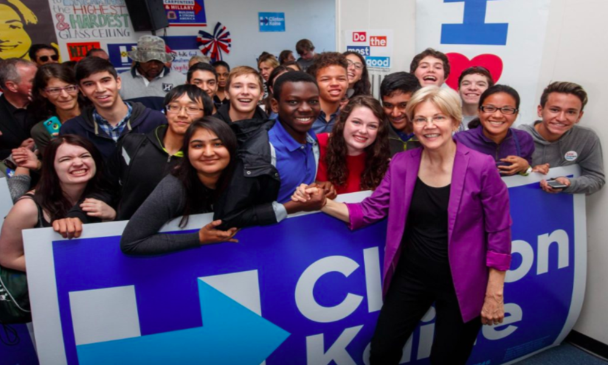

Lots of students don't understand the political power they have even when they're not 18. This is what HSDA strives out to help address, serving as an entry point to youth involvement in politics. Youth activists canvass, register voters, write, organize, and help win elections for the democratic side. In 2016 alone, our members made nearly 150,000 phone calls, knocked on over 50,000 doors, and registered over 6,000 voters. And we've only been growing.
My work in the organization revolves around data and expansion. I'm helping expand in states that don't have many chapters, and connect students with their local democratic party. I'm also helping set up voter registration drives across the country, and making sure the data from every student who doorknocks, phonebanks, and registers voters is recorded. A future project is going to be designing a system for states to easily create their own customizable website, and amplify the stories of activists and chapters across the country.
